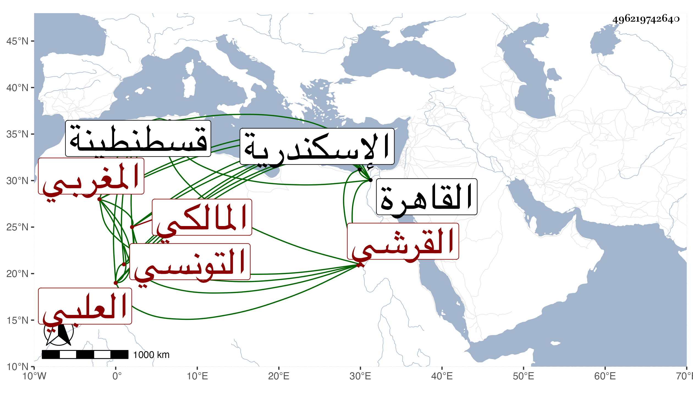

0902Sakhawi.DawLamic.ITO20230111-ara1.EIS1600.496219742640
Biography ID: 496219742640
920
سرور بن عبد الله بن سرور بن أحمد بن عبد الحميد أبو الوليد وأبو الفرج بن أبي محمد القرشي العلبي المغربي التونسي المالكي ابن أخت عبد الله بن مسعود بن علي بن القرشية الآتي ونزيل اسكندرية . ولد سنة إحدى وتسعين وسبعمائة بقسنطينة ، وقدم القاهرة وسمع من شيخنا في الاملاء وغيره وأجاز له خاله في رجب سنة اثنتين وعشرين ، وتميز في القراءات وممن أخذها عنه الشمس الديروطي ، وامتحن وبقي مسلسلا في بعض المراكب أواخر سنة أربع وأربعين ثم ذكر في شعبان من التي تليها أنه قتل وانقطع خبره من ثم رحمه الله .
